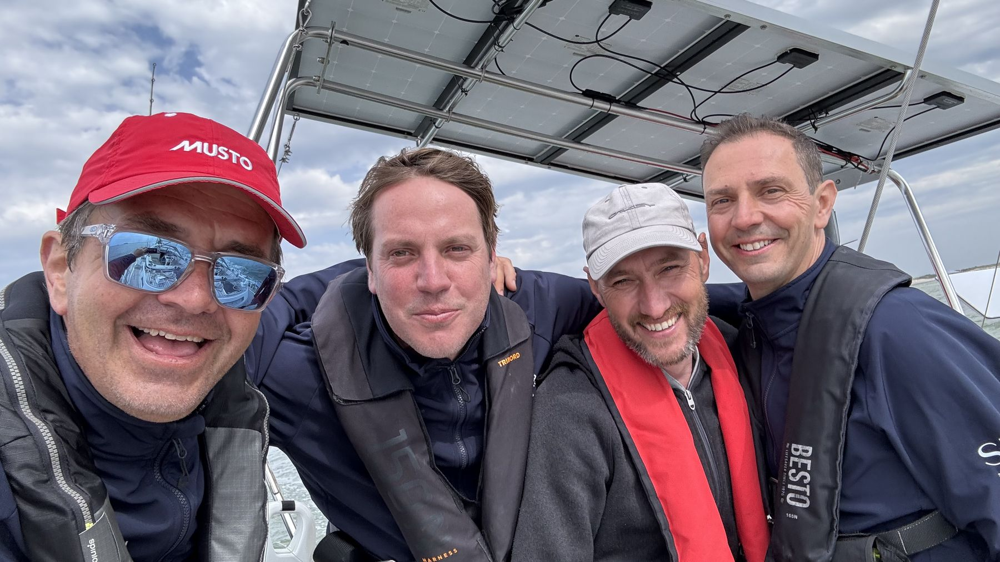
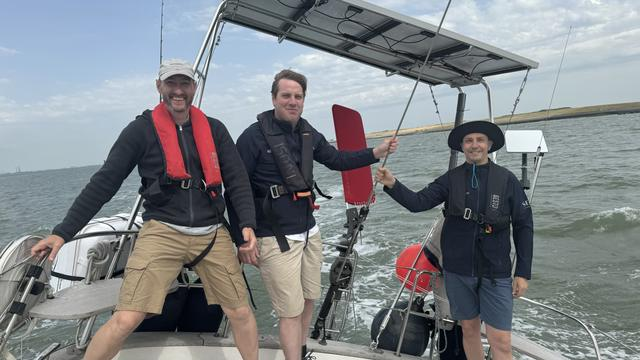
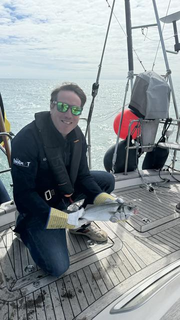
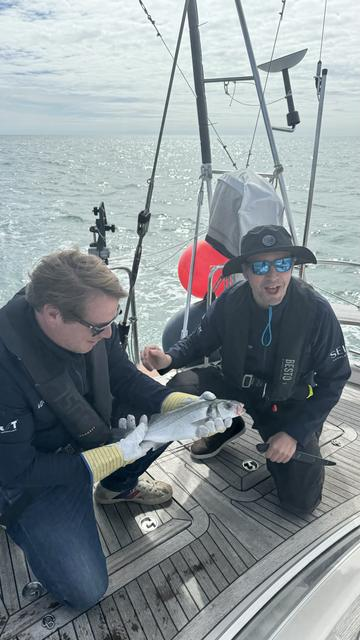
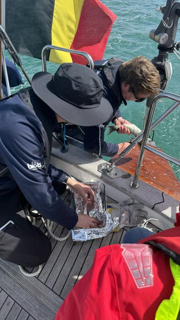
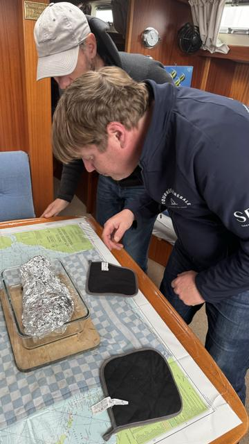
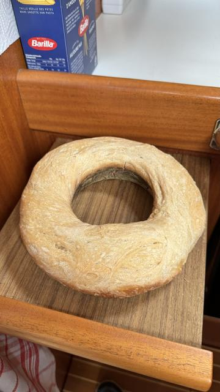
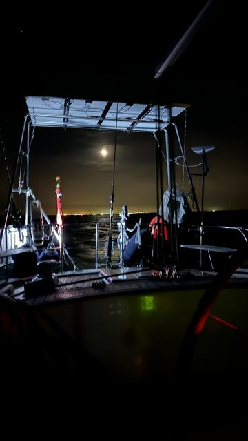

3 juli 2024
Dit is de allereerste keer
De eerste etappe van onze eerste Grote Tocht, het was te denken dat we een paar premières zouden meemaken. Tot zover zijn boot & bemanning met verve geslaagd in alle "ontmaagdingen". Tegen de volgende etappes wordt dit allemaal een gerodeerd ritueel. Een bloemlezing:
Jules in actie
De crew stond te popelen om de nieuwe Hydrovane uit te testen van zodra we in Breskens op zee waren. Eerste pogingen vereisen wat zoekwerk, maar na een half uurtje proberen, worden we quasi perfect op een halvewindse koers gehouden. Mooi om te zien, knap staaltje techniek. We dopen hem "Jules", in memoriam van een fantastische zeiler met wie ik nog graag een tochtje gemaakt had.

Meteen beet & in de pan
Na 6 jaar zeilen zonder iets te vangen, hebben we deze keer een paar uur na het uitgooien van onze vislijn al meteen prijs! De vis-ervaring van Dyck zal er zeker voor iets tussen zitten. Een zeebaars van 1.5kg, ideaal en papillotte voor een lichte lunch voor een extatische crew.




Zeilen met dolfijnen
Niets waar je zo gegarandeerd vrolijk van wordt als een bende dolfijnen die een paar minuten naast, onder en voor de boot spelen. Zalig! We verwachten die quasi iedere etappe op bezoek, maar de eerste keer is altijd iets speciaals.
Pain quotidien
Dit wordt vooral op de langere oversteken en belangrijke skill voor de hele crew. Hier heeft de skipper het goede voorbeeld gegeven maar hij is blijkbaar de binnenkant vergeten 😜😁. Maar het was toch lekker...

Nachtzeilen
Eerlijkheid gebiedt erbij te zeggen dat het tot nu toe voornamelijk nacht"varen" was, met de motor op. Twee nachten niet altijd genoeg wind gehad om door te zeilen en vaak in drukke gebieden waar voldoende snelheid bijdraagt tot de veiligheid, dus vaak op motor gevaren. Iets minder rustig, maar op zich ook weer een leuke terugkeer naar één van mijn favoriete bezigheden. Beeldmateriaal in het donker verzamelen blijkt ook iets minder evident...


Naarmate we nog "firsts" meemaken, zal ik dit artikel updaten. Het zijn keer op keer fantastische ervaringen geweest, die elke crew de komende etappes ook gaat meemaken...